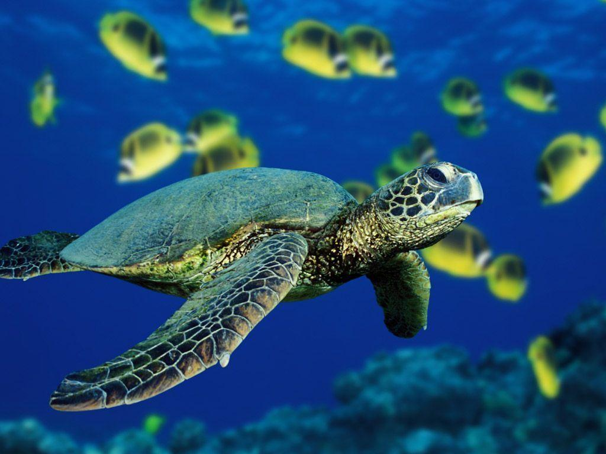

Ecosystem
Sea Life is a chain of commercial sea life-themed aquarium attractions. As of April 2017 there are 53 Sea Life attractions (including standalone Sea Life centres, mini Sea Life features within resort theme parks, and Legoland submarine rides) around the world. The chain is owned by the British company, Merlin Entertainments.
Sea Life centres aim to combine modern display technology, biological expertise, and entertainment to provide themed journeys through European and tropical waters. This often provides close encounters with sealife, from shrimps and starfish, to seahorses, sharks and stingrays.
Sea Life centres also claim to champion the cause of marine conservation through education, awareness and, wherever possible, direct action.
Sea Life Sanctuaries and Seal Sanctuaries operate from three centres in the United Kingdom as well as one location in Australia. The United Kingdom locations include the Cornish Seal Sanctuary in Gweek, Cornwall; the Hunstanton Sea Life Sanctuary in Norfolk; and the Scottish Sea Life Sanctuary at Oban. [ SCOTTISH SEA LIFE SANCTUARY CLOSED IN OCTOBER 2018.][1] Manly Sea Life Sanctuary (formerly Oceanworld Manly) operates in Australia.[2] The Hunstanton facility operates otter and penguin sanctuaries as well as a seal hospital.[3]
Since 2001 all Sea Life centre conservation, rescue, and campaigning work has come under the SOS scheme, an acronym for "Save Our Seas." SOS supports the work of wildlife charities and campaign groups including Greenpeace, the Worldwide Fund for Nature, the Whale and Dolphin Conservation Society, and the British Divers Marine Life Rescue. Each centre also has a headline campaign which changes periodically. Past campaigns have advocated increased protection for loggerhead sea turtles, and restrictions on the practice of shark finning.
